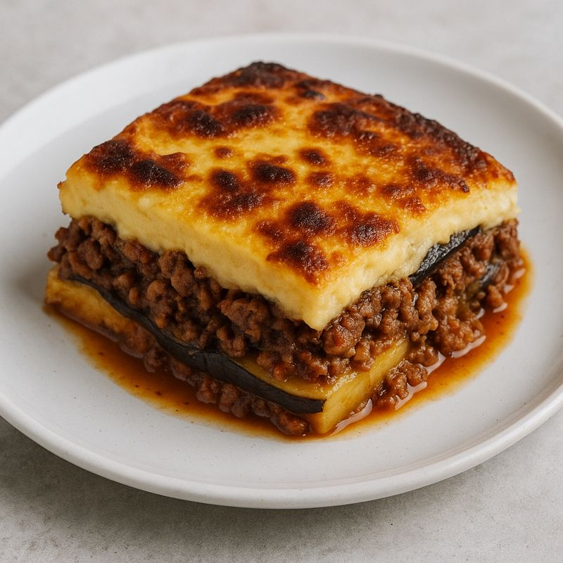

Moussaka

60 Min

Normal

12.12.2025
| 150g Kartoffel(n) (geschält, in 2 mm feine Scheiben geschnitten) |
| 150g Aubergine(n) (vom Stielansatz befreit, in 2 mm feine Scheiben geschnitten) |
| 125g Hackfleisch (beforzugt Lamm) |
| 0.5 Zwiebel(n) (fein gehackt) |
| 1 Knoblauchzehe(n) (fein gehackt) |
| 0.25 gr. Dose(n) Tomaten, geschälte |
| 1 Ei(er) |
| 10g Butter |
| 10g Mehl |
| 100ml Milch |
| 25g Parmesan, frisch gerieben |
| Zimtpulver |
| Salz und Pfeffer |
| Olivenöl |
| Muskat |
Zubereitung
Vorbereitung ca. 60 Minuten
Gesamtzeit ca. 2 Std. 50 Min. Minuten
Auberginen salzen, 30 Minuten stehen lassen. Anschließend sorgfältig
trocken
tupfen. Öl in einer Pfanne erhitzen. Die Scheiben von jeder Seite ca. 30 Sekunden anbraten.
Herausnehmen und auf Küchenpapier abtropfen lassen.
Erneut Öl in der Pfanne erhitzen und die Kartoffelscheiben unter mehrmaligem Wenden 10
Minuten
anbraten.
In einem Topf etwas Öl erhitzen, Fleisch, Zwiebeln und Knoblauch darin anbraten. Tomaten
zufügen
und etwas zerkleinern. Mit Lorbeer, Zimt, Salz, Pfeffer und Muskatnuss würzen. Unter
ständigem
Rühren bei geöffnetem Topf so lange dünsten, bis sämtliche Flüssigkeit verkocht ist. Das
Lorbeerblatt entfernen, nochmals abschmecken. Den Topf vom Herd nehmen und 2 Eier
unterrühren.
In einem zweiten Topf die Butter zerlassen. Mit Mehl bestäuben und kurz anschwitzen. Nach
und
nach die Milch zugießen und unter Rühren dicklich einkochen lassen. Mit Salz, Pfeffer und
Muskatnuss pikant abschmecken. Den Topf vom Herd nehmen, einen Esslöffel Käse und die
restlichen
Eier hineinrühren.
Eine große, flache Auflaufform mit Olivenöl fetten. Die Hälfte der Kartoffeln und Auberginen
einfüllen. Mit Salz, Pfeffer und Muskatnuss würzen und mit etwas Käse bestreuen.
Anschließend
die Hackfleischmasse gleichmäßig darauf verteilen. Die restlichen Kartoffeln und Auberginen
darauf geben und mit der Sauce begießen. Mit Käse bestreuen.
Die Moussaka bei 180 °C Umluft im vorgeheizten Backofen 30 - 40 Minuten backen.
Rezept erstellt von

Niko